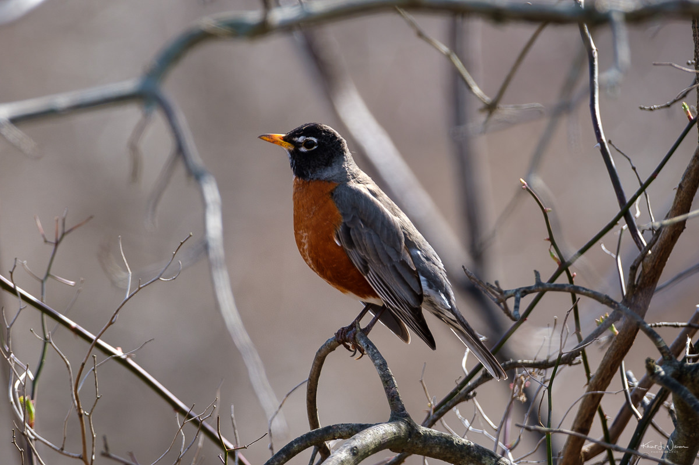

American Robin - Turdus migratorius
The American robin is a migratory bird of the true thrush genus and Turdidae, the wider thrush family. It is named after the European robin because of its reddish-orange breast, though the two species are not closely related, with the European robin belonging to the Old World flycatcher family.
Species Information
| Scientific Name | Turdus migratorius |
|---|---|
| Size | 9-11 inches |
| Diet | Insects, worms, berries |
| Lifespan | 2 years (wild average) |